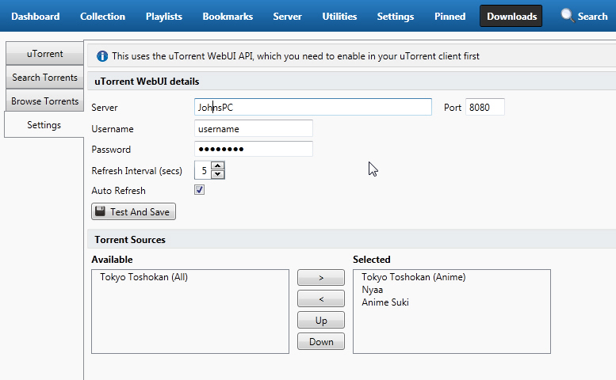

JMM Desktop - User Manual - Downloads
Introduction
The Downloads tab helps you to search and browse torrents from multiple sites, and also to add and manage torrents in uTorrent
uTorrent integration allows you to manage your uTorrent downloads even if they are on a different machine
NOTE - current the only torrent client supported is uTorrent.
Settings
For uTorrent integration to work you must enable the Web UI in your client. It should look something like the following.
Use the same details as you entered in uTorrent to populate the settings in JMM Desktop
